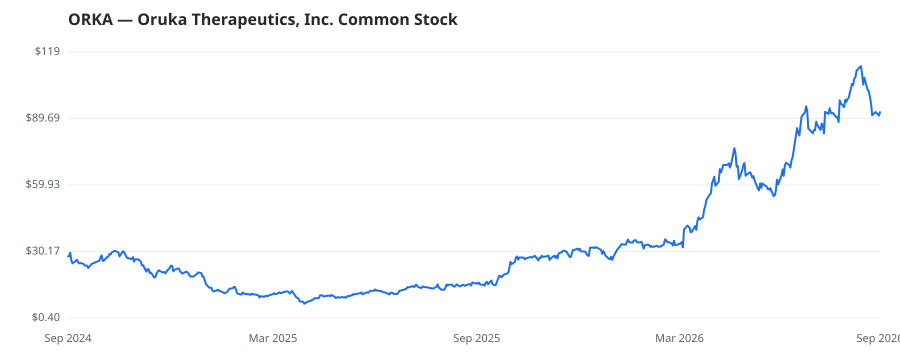

bullish · bearish · n/a — dots: price>SMA10 · SMA10>SMA50 · SMA50>SMA200 · up>down volume (20d)
Pharmaceuticals & Biotech · mid cap

Oruka Therapeutics Inc a clinical-stage biopharmaceutical company focused on developing novel monoclonal antibody therapeutics for psoriasis (PsO) and other inflammatory and immunology (I&I) indications. Its programs are to treat and potentially modify disease by targeting mechanisms with efficacy and safety involved in disease pathology and the activity of pathogenic tissue-resident memory T cells (TRMs). Its program, ORKA-001, is designed to target the p19 subunit of interleukin-23 (IL-23p19) for the treatment of PsO. Its co-lead program, ORKA-002, is designed to target interleukin-17A and i PHARMACEUTICAL PREPARATIONS · website
| Revenue | $0 | Net income | $-105.4M |
|---|---|---|---|
| Operating income | $-122.1M | Diluted EPS | — |
| Assets | $488.6M | Equity | $471.9M |
This name produced 0.4% of the ranked funds’ total alpha.
🛒 Newly buying: SECTORAL ASSET MANAGEMENT INC (+6%, 2.8% of book)
| Fund | Fund alpha vs SPY | Position | % of book |
|---|---|---|---|
| Fairmount Funds Management LLC | +131% | $353M | 23.3% |
| Avidity Partners Management LP | +63% | $72M | 11.6% |
| SECTORAL ASSET MANAGEMENT INC | +6% | $4M | 2.8% |
Hedge data: SEC EDGAR 13F · ranked funds beat SPY in >50% of their quarters · fund alpha = mirror-portfolio return minus SPY.